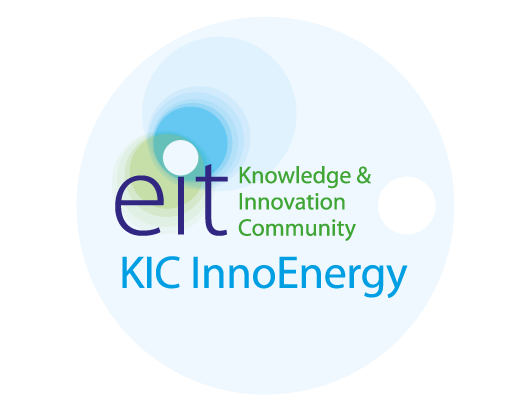

Innovation Now! 2016

Edições Anteriores
O Innovation Now! conta já com 4 edições organizadas pela associação BEST Aveiro na Universidade de Aveiro, tendo evoluído na qualidade do evento e quantidade de participantes. Começou como um evento de uma tarde com palestras de professores da universidade, desenvolveu-se nas seguintes edições passando a contar com apresentações de start-ups aveirenses e dos seus produtos e revela-se este ano um promissor simpósio de dois dias de partilha de conhecimento e experiência entre alguns dos mais reconhecidos empreendedores de Portugal e os alunos da Universidade de Aveiro.
Em 2015 o evento reafirmou-se com uma nova estrutura na Universidade de Aveiro, tendo sido realizado a 16 de outubro e sendo constituído por palestras com oradores conhecidos do público, uma round table, workshops por parte de empresas e uma mostra tecnológica na qual estiveram presentes diversas entidades a expor os seus serviços e produtos inovadores que vingaram no mercado tecnológico. O evento ocorreu no Edifício Central e da Reitoria da Universidade de Aveiro durante todo o dia e contou com a participação de cerca de 150 alunos.
Este ano o Innovation Now! afirma-se como evento anual e permite aos seus participantes desfrutarem de uma maior variedade e, ao mesmo tempo, maior especificidade de áreas abordadas no que diz respeito à inovação em Portugal.
Como evento em consolidação na Universidade de Aveiro, o Innovation Now! cresce, sucesso a sucesso, junto dos estudantes de Ciências e Tecnologias, tornando-os cada vez mais aptos e capazes de encarar o mundo de oportunidades que os rodeia.

Sendo a inovação tecnológica um dos propulsores do progresso científico, o Innovation Now! surge na Universidade de Aveiro como um simpósio de partilha de ideias, conhecimentos e experiências entre profissionais e estudantes que vivem a inovação no seu dia-a-dia. O evento, organizado anualmente pelo BEST Aveiro, aborda diversas visões de profissionais da área, permitindo uma aproximação dos estudantes aveirenses à realidade empresarial e ainda a oradores de renome nacional, especialistas em diversas áreas técnicas onde a inovação está diariamente presente.
Em 2016 o evento decorrerá nos dias 2 e 3 de novembro e contará com a realização de Palestras, Workshops de Soft Skills, Round Tables, resolução de Casos de Estudo e ainda um Concurso de Pitching. Neste evento, conceitos como interdisciplinaridade, espírito criativo e empreendedorismo serão valorizados.
Programa
| 09:15 |
David CarvalhãoFuga do LaboratórioAlberto LiberalÉ possível o impossívelDiogo TeixeiraPeople Centred InnovationJoão CatalãoInovação - O Poder das Linhas Curvas |
||||
|---|---|---|---|---|---|
| 10:30 |
Paula VilarinhoCerâmicos: Inovação ou Tradição |
João BarracaIoT - Insecurity of Things |
|||
| 11:00 | COFFEE-BREAK | 11:20 |
Soraya GaditComo é que as empresas do século XXI inovam: inovação aberta e/ou inovação fechada?Tim VieiraThe big picture |
||
| 11:50 |
KIC InnoEnergyApresentação da empresa e das suas oportunidades para os estudantes |
||||
| 12:50 | ALMOÇO | ||||
| 14:05 |
Carlos MartinsDesafios científicos e tecnológicos da astrofísica moderna: o exemplo do ESPRESSO (e o caminho para o E-ELT)Sofia Costa de OliveiraFASTinov: Do laboratório para o doente, em modo Ultra FAST |
Ana Sofia SilvaMicropartículas inteligentes para inalação pulmonar |
|||
| 14:55 |
MICROSOFT Pitching ContestConcurso de pitching dinamizado pela empresa Microsoft |
Workshop em Marketing Pessoal - por AS Formação
|
|||
| 16:30 | COFFEE-BREAK | ||||
| 17:00 |
Round Table"Where do good ideias come from?" - Moderada por Nuno Hélder Silva |
||||
| 18:30 | SESSÃO DE ENCERRAMENTO | ||||
| 19:00 | COCKTAIL NETWORK | ||||


Case Study
Enquadramento
A generalização do uso de veículos eléctricos irá promover a difusão da infraestrutura necessária para o carregamento das suas baterias. Esta infraestrutura permite não só funcionar como interface à rede eléctrica como também ser uma fonte de informação sobre o veículo, o seu perfil de utilização e até comunicação com o seu utilizador. A forma como o utilizador usa esta infraestrutura permite a criação de novos serviços de valor acrescentado para o cliente e que podem gerar valor para os stakeholders envolvidos.
Desafio
Esperam-se sugestões quanto a estes novos serviços adicionais ao carregamento, potenciando a infraestrutura e sua informação, analisando os modelos de negócio possíveis para estes serviços e criando cenários que permitam a avaliação do valor gerado.
Um representante da Efacec, membro do Gabinete de Gestão de Tecnologia apresentará o Caso.
A resolução terá uma duração máxima de 3 horas, às quais serão adicionados 30 minutos, disponíveis para a apresentação do projeto em questão, e será realizado no dia 2 de novembro. Os projetos serão avaliados por um juri da Efacec.

Oradores
Alberto Liberal

Finance Administrator Covidien
Em 1996 licenciou-se em Economia pela Universidade do Porto e adquiriu o grau de Mestre em Auditoria e Controlo de Gestão em 2006, pela Universidade Católica Portuguesa. Possui uma extensa formação em seminários para profissionais de finanças e possui várias especialidades, tais como forecasting e budgeting, gestão de cash flow, business e management reporting, avaliação de projetos de investimento, declaração de impostos e planeamento fiscal, entre outras. Tem uma excelente produtividade como controller, com mais de dez anos de experiência, elaborando relatórios financeiros e de gestão precisos com recomendações para a gestão de topo.

Notícias
Miguel Gonçalves, Sofia Oliveira, Diogo Teixeira vão estar presentes no Innovation Now!
25 de outubro de 2016
Estás curioso em saber quem são os próximos oradores do Innovation Now!?
A Microsoft vem ao Innovation Now!
23 de outubro de 2016
Esta multinacional americana desenvolve, licencia e comercializa softwares de computador, produtos eletrónicos e serviços pessoais.
Ana Sofia, Alberto Liberal, Soraya Gadit vão estar presentes no Innovation Now!
22 de outubro de 2016
Estás curioso em saber quem são os próximos oradores do Innovation Now!?

A OG Medical vem ao Innovation Now!
21 de outubro de 2016
A OG medical é uma empresa dedicada ao fornecimento de soluções médicas que promove algumas das soluções mais recentes de informática médica, influenciando as novas tendências das tecnologias da informação na área da Saúde.

João Catalão, Adélio Mendes, Nuno Fonseca vão estar presentes no Innovation Now!
20 de outubro de 2016
És apreciador de qualidade de som? Interessas-te pela tecnologia de células solares? Talvez adores discutir e debater inovação?

A EFACEC vem ao Innovation Now!
19 de outubro de 2016
É a maior empresa portuguesa do sector eléctrico e electromecânico e desenvolve produtos, soluções e sistemas de elevada tecnologia que fazem parte do nosso quotidiano.
Tim Vieira, João Barraca, Luís Oliveira e Silva vão estar presentes no Innovation Now!
18 de outubro de 2016
Estás curioso(a) em saber quem são os próximos oradores do Innovation Now!?
A Hovione vem ao Innovation Now!
17 de outubro de 2016
A Hovione é um dos parceiros que vem ao Innovation Now!. Descobre mais aqui.
A KIC InnoEnergy vem ao Innovation Now!
15 de outubro de 2016
A KIC InnoEnergy é um dos parceiros que vem ao Innovation Now! falar sobre como funciona a inovação na sua empresa e como conseguem ser líderes na área da sustentabilidade energética.
André Marquet, Paula Vilarinho e David Carvalhão vão estar presentes no Innovation Now!
15 de outubro de 2016
André Marquet, Paula Vilarinho e David Carvalhão vão estar presentes no Innovation Now!.
Contactos
Carolina Conceição
Coordenadora do Innovation Now! 2016
carolina.concei.o@BEST.eu.org
911 786 398
Joana Caneco
Responsável de Participantes
joana.caneco@BEST.eu.org
914 417 607

Miguel Oliveira
Presidente do BEST Aveiro
miguel.guimaraes.oliveira@BEST.eu.org
918 570 425
Filipe Silva
Tesoureiro do BEST Aveiro
filipe.silva@BEST.eu.org
932 155 968